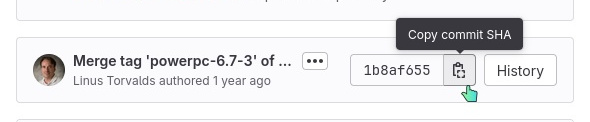

Porting to a new device/Kernel package/Preparation
APKBUILD file
APKBUILD has nothing to do with Android's app format! |
APKBUILD file is a script used to build a package. APKBUILDs for device- and linux- packages related to the device need to be edited before building as suggested by the following guide.
$ cd $(pmbootstrap config aports)/device/testing/device-wiki-example
$ cd $(pmbootstrap config aports)/device/testing/linux-wiki-example
If you are curious about APKBUILD variables and functions, you can look at pmbootstrap specific APKBUILD options and Alpine APKBUILD Reference.
Source code
Find the source code of the known working kernel fork. Try to find a widely used kernel if possible, for example from LineageOS. The kernel version is also important, as of writing (April 2020), the lowest kernel version number we have packaged is 3.0.x. It might be possible to get even older kernels running (with old GCC versions), but even if you get them to boot, you will likely run into problems down the road.
Once you have your kernel, adjust the # Source section in the linux-wiki-example/APKBUILD file.
Source section generated by default:
# Source
_repository="(CHANGEME!)"
_commit="ffffffffffffffffffffffffffffffffffffffff"
_config="config-$_flavor.$arch"
source="
$pkgname-$_commit.tar.gz::https://github.com/LineageOS/$_repository/archive/$_commit.tar.gz
You have to change _repository and _commit variables. _repository is a name of repository, _commit is a commit hash.
Commit hash is a unique identifier of a change in git repository and it may be found in different places depending on a platform where the kernel source is stored. In general, link to commit details contains full hash.
Example:
| Platform | Image example | Comment |
|---|---|---|
| GitHub | Both Commit title and short commit hash links have full hash in it. As another option, click one of the links and press Copy full SHA button (bottom part of image) | |
| Gitlab |  | Clicking commit |
{kind=link}
{kind=link}
If your kernel is not in a LineageOS repository, you also have to change the URL in source accordingly.
Example for https://github.com/jmrohwer/TF101-GNU-kernel :
# Source
_repository="TF101-GNU-kernel"
_commit="5ddd9654ec52599fbef71657ad2e03b3cdacee31"
_config="config-$_flavor.$arch"
source="
$pkgname-$_commit.tar.gz::https://github.com/jmrohwer/$_repository/archive/$_commit.tar.gz
If your kernel is only available as archive (zip, tarball, etc.), you can unpack it and use pmbootstrap build linux-wiki-example --src=/path/to/extracted/kernel/source for now. Later on, when it's time to upstream your work into the official postmarketOS repositories so everybody can use it, talk to us so we can publish the kernel in a good place.
Do not fork the kernel and add patches there. There are already enough Linux kernel forks out there, and it's next to impossible to understand which kernel repository has which patches applied. Let's not make the situation worse with creating another fork with random patches on top just to make it compile with postmarketOS. Instead, point to the kernel you found. All postmarketOS specific patches should be applied as patch files in the same directory as the APKBUILD. How this is done exactly is described further below in the porting guide. When doing it like that, we avoid downloading the huge kernel sources every time a new patch is applied (remember that not everybody in the world has fast Internet connections), and it makes it much more transparent as the actual patches show up in code reviews.
Consider the reliability of the kernel source. If there is any chance that the source might disappear, a backup must be taken and used instead of the original source. See How to properly backup downstream kernels for instructions.
Kernel version
In the repository with the kernel source code, you will find a Makefile. Open this file and adjust the pkgver in the kernel APKBUILD to the information from the VERSION, PATCHLEVEL and SUBLEVEL variables (e.g. 3.4.0).
Defconfig
Next you will need to find the kernel configuration that is used to compile that kernel source for your device. Download it and save it as pmaports/device/testing/linux-wiki-example/config-wiki-example.armv7 (replace wiki-example and armv7).
$ wget https://github.com/LineageOS/lge-kernel-mako/raw/cm-14.1/arch/arm/configs/lineageos_mako_defconfig
$ mv lineageos_mako_defconfig pmaports/device/testing/linux-wiki-example/config-wiki-example.armv7
Download sources and update checksums
Use the checksum command. It will not only generate the checksums of all source files, but also download them in case they have not been downloaded yet. If this command fails, most likely the download URL is invalid and needs to be adjusted in the APKBUILD again. Another cause could be, that the defconfig could not be found (e.g. because it was saved with a wrong file name). The actual download URL (with all variables replaced) and the download progress are visible in the log window.
$ pmbootstrap checksum linux-wiki-example